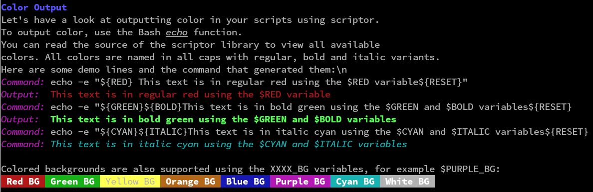
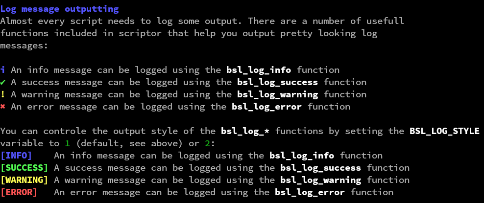

The Bash Scripting Library (BSL) is a collection of useful Bash scripts and libraries you can use to improve your Bash scripts.
The scripts contain a number of useful tools:
BSL includes useful color variables to use in your script output:
Check out the demo demos/demo.sh to view more advanced usage of the color and styling variables.
If your script needs a way to output information to the screen you can use the bsl_log_* functions. They are designed to present information in a clear and informative manner:
Check the demo demos/log_demo.sh for more advanced usage and features.
BSL includes helper functions to add try-catch functionality to your code: